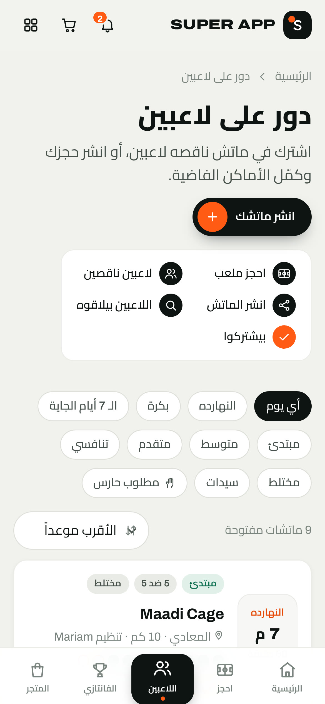

ماتش خماسي
الماتش الساعة 9
وواحد اعتذر
الساعة 8 😩
⚽
ماتش الخميس
10 أعضاء
حسام
معلش يا رجالة مش هقدر آجي 🙏
8:02 م
يعني إيه؟؟ الماتش كمان ساعة
8:03 م
مودي
حد يعرف حد فاضي؟
8:05 م
شادي
هنلعب 4 ضد 5 ولا إيه 😂
8:06 م

انشر ماتشك ←
3 لاعيبة طلبوا ينضموا
ماتش الخميس · 9 م · ناقص 1
قبلت أحمد
نصيبه اتدفع وهو بينضم
10/10
الماتش اكتمل
ناقصك لاعب؟
انشرها
واللي جنبك
ينضم ويدفع نصيبه